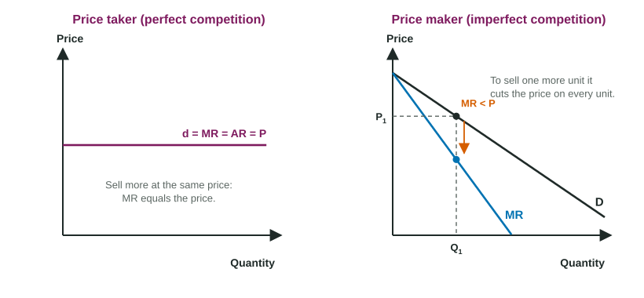

Introduction to Imperfectly Competitive Markets
Firms with market power are price makers: they face a downward-sloping demand curve, so they sell more only by cutting the price on every unit, and their marginal revenue curve lies below demand.
Part 1 · Hook
Why this matters
Part 2 · Before you start
What this builds on
Part 3 · Prerequisite check
Quick check before you start
1. A perfectly competitive firm faces a demand curve that is
- horizontal at the market price
- downward sloping
- vertical
- upward sloping
Show the answer
A price taker sells all it wants at the market price: d = MR = AR = P.
- Correct: horizontal at the market price:
- downward sloping:
- vertical:
- upward sloping:
2. A firm maximizes profit by producing the quantity where
- MR = MC
- TR is largest
- ATC is lowest
- P = AVC
Show the answer
Produce each unit whose marginal revenue covers its marginal cost, stopping where MR = MC.
- Correct: MR = MC:
- TR is largest:
- ATC is lowest:
- P = AVC:
3. In the long run, positive economic profit in perfect competition leads to
- entry, until economic profit is zero
- exit, until losses appear
- a rise in the market price
- no change
Show the answer
Profit attracts new firms; market supply shifts right until price falls to minimum ATC.
- Correct: entry, until economic profit is zero:
- exit, until losses appear:
- a rise in the market price:
- no change:
Part 4 · See it
See it first

Part 5 · Step by step
How it works, step by step
- A firm has market power (few rivals, a differentiated product, or a barrier to entry)it faces a downward-sloping demand curve
- To sell one more unit it must lower the price on every unitmarginal revenue is less than the price, so the MR curve lies below demand
- It produces where MR = MC and reads its price from the demand curveits price is above marginal cost
- Barriers to entry keep rivals outeconomic profit can last into the long run
Part 6 · Key ideas
Key ideas
- Market power: the ability to raise the price without losing every customer. A firm with it is a price maker and faces a downward-sloping demand curve.
- Barriers to entry (patents and licenses, control of a key resource, economies of scale) keep rivals out, so economic profit can last.
- The structures, from most sellers to fewest: perfect competition, monopolistic competition (many sellers, differentiated products), oligopoly (a few interdependent sellers), monopoly (one seller).
- A price maker's marginal revenue curve lies below demand: selling one more unit means cutting the price on all units. It still produces where MR = MC, then reads its price from demand.
Part 7 · Misconception
A common mistake
The wrong idea: A firm with market power charges the highest price buyers would ever pay.
What actually happens: A price maker is still limited by its demand curve: a higher price means fewer sales. It picks the quantity where MR = MC and charges the price on the demand curve at that quantity, which is above MC but not the highest possible price.
Part 8 · Check yourself
Check yourself
Exam-style questions. Anything you miss goes into your review queue.
1. A firm has market power when it
- sells more output than any other firm in the market
- can raise its price without losing all of its customers
- earns positive accounting profit
- can sell as much as it likes at the market price set by others
Show the answer
Market power is the ability to raise the price above marginal cost without losing all of its customers; such a firm is a price maker and faces a downward-sloping demand curve.
- sells more output than any other firm in the market: A large firm can still be a price taker if its product is identical to many rivals'.
- Correct: can raise its price without losing all of its customers: Right: that is what makes it a price maker.
- earns positive accounting profit: Accounting profit says nothing about whether the firm can set its own price.
- can sell as much as it likes at the market price set by others: That describes a price taker, which has no market power.
Scenario
Four markets in one county
Read the descriptions of four invented markets.
- Market W: thousands of farms grow the same variety of wheat, and any farm can sell all it wants at the market price.
- Market X: one company holds the only license to pipe water to homes in the county, and no other firm may lay pipes.
- Market Y: three bus lines carry nearly all riders between two cities; each watches the others before it sets its fares.
- Market Z: forty hair salons compete, each with its own style, location and loyal customers, and a new salon can open in a few weeks.
2. Which market is an oligopoly?
- Market W
- Market Y
- Market X
- Market Z
Show the answer
An oligopoly has a few large firms whose choices depend on one another: three bus lines that watch each other's fares.
- Market W: Thousands of farms selling an identical product is perfect competition.
- Correct: Market Y: Right: a few firms, each watching the others before setting its fares.
- Market X: A single seller with a legal barrier is a monopoly.
- Market Z: Many firms with differentiated products and easy entry is monopolistic competition.
3. In which market does a single firm have the most market power, and why?
- Market Y, because its fares are higher than the other markets' prices
- Market Z, because each salon has loyal customers
- Market X, because it is the only seller and the license keeps rivals out
- Market W, because the farms together sell far more output than any other market
Show the answer
Market X has one seller and a legal barrier to entry, so buyers have no close substitute and no rival can enter: the firm can raise its price without losing every customer.
- Market Y, because its fares are higher than the other markets' prices: The size of a price says nothing about market power; three rivals limit each bus line.
- Market Z, because each salon has loyal customers: Loyalty gives a salon a little market power, but forty rivals and easy entry limit it.
- Correct: Market X, because it is the only seller and the license keeps rivals out: Right: one seller plus a barrier to entry gives the most market power.
- Market W, because the farms together sell far more output than any other market: Each farm is a price taker with no market power at all.
4. In which market does each firm face a horizontal demand curve?
- Market X
- Market Y
- Market Z
- Market W
Show the answer
A wheat farm is a price taker: it sells all it wants at the market price, so its demand curve is horizontal at that price (d = MR = AR = P). The firms in the other three markets are price makers.
- Market X: The only seller faces the whole downward-sloping market demand curve.
- Market Y: Each bus line can raise its fare and keep some riders, so its demand slopes down.
- Market Z: A salon with its own style can raise its price and keep some customers, so its demand slopes down.
- Correct: Market W: Right: a price taker's demand is horizontal at the market price.
Data
Brisa Water Taxi: price and rides per hour
| Price per ride (dollars) | Rides per hour | Total revenue (dollars) |
|---|---|---|
| 10 | 1 | 10 |
| 9 | 2 | 18 |
| 8 | 3 | 24 |
| 7 | 4 | 28 |
| 6 | 5 | 30 |
5. Use the table. What is the marginal revenue of the third ride, in dollars?
Type a number. A four-function calculator is allowed, as on the exam.
Show the answer
Marginal revenue is the change in total revenue divided by the change in quantity:
- Answer: 6
6. Use the table. Why is the marginal revenue of the third ride less than its $8 price?
- To sell it, Brisa must charge all riders $8, giving up $1 on each of the first two
- The cost of the third ride is higher than the cost of the second ride
- The demand for water taxi rides has decreased as the price fell
- Each extra rider pays less than the rider before, but the earlier riders still pay the old $9 price
Show the answer
To sell a third ride Brisa lowers the price from $9 to $8 for every rider, so it gains $8 from the new rider but loses $1 on each of the two rides it could have sold at $9: $8 minus $2 is $6.
- Correct: To sell it, Brisa must charge all riders $8, giving up $1 on each of the first two: Right: the gain from the new ride is reduced by the price cut on the rides it already sold.
- The cost of the third ride is higher than the cost of the second ride: Cost does not enter marginal revenue; the table holds only revenue.
- The demand for water taxi rides has decreased as the price fell: A lower price moves Brisa along its demand curve; demand itself has not changed.
- Each extra rider pays less than the rider before, but the earlier riders still pay the old $9 price: With one price for everyone, the earlier riders also pay the new, lower price.
7. A firm with market power maximizes profit. Mark the point that shows the price it charges and the quantity it sells.
Work on the graph (it needs JavaScript), then check.
Show the answer
Find the quantity where MR = MC, then go straight up to the demand curve: the price is read from demand, which lies above MR at that quantity.
- Key: see the explanation
Part 9 · Summary
Summary
Part 10 · Up next
What comes next
Part 11 · Connections